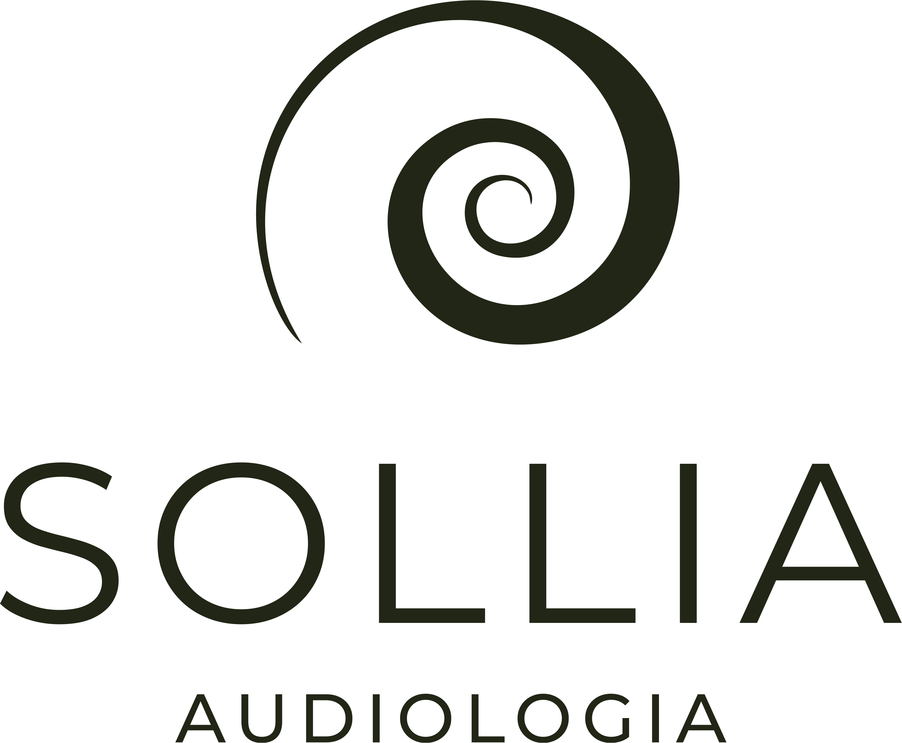

Cuidado especializado em saúde auditiva, com excelência, sensibilidade e compromisso.
Nosso trabalho une conhecimento científico, experiência clínica e acolhimento, buscando oferecer soluções que favoreçam a comunicação, a autonomia e a qualidade de vida.

Quem somos
A Sollia nasce da união dessas experiências e de um propósito em comum: oferecer cuidado especializado em saúde auditiva, com excelência, sensibilidade e compromisso com cada pessoa.
Nosso trabalho une conhecimento científico, experiência clínica e acolhimento, buscando oferecer soluções que favoreçam a comunicação, a autonomia e a qualidade de vida.
A Sollia representa a união dessas trajetórias, experiências e valores. Um projeto construído a partir da amizade, sustentado pelo conhecimento científico e movido pelo desejo de fazer a diferença na vida das pessoas.
Nosso trabalho une conhecimento científico, experiência clínica e acolhimento, buscando oferecer soluções que favoreçam a comunicação, a autonomia e a qualidade de vida.
A Sollia representa a união dessas trajetórias, experiências e valores — um projeto construído a partir da amizade e movido pelo desejo de fazer a diferença na vida das pessoas.
.jpeg)
Nosso propósito
A Sollia nasce da união dessas experiências e de um propósito em comum: oferecer cuidado especializado em saúde auditiva, com excelência, sensibilidade e compromisso com cada pessoa.
Nosso trabalho une conhecimento científico, experiência clínica e acolhimento, buscando oferecer soluções que favoreçam a comunicação, a autonomia e a qualidade de vida.
A Sollia nasce de um propósito em comum: oferecer cuidado especializado em saúde auditiva, com excelência, sensibilidade e compromisso com cada pessoa.
Nosso trabalho une conhecimento científico, experiência clínica e acolhimento para favorecer a comunicação, a autonomia e a qualidade de vida.
“Um projeto construído a partir da amizade, sustentado pelo conhecimento científico e movido pelo desejo de fazer a diferença na vida das pessoas.”
Serviços e Exames
Cuidado especializado em saúde auditiva, avaliação vestibular e reabilitação com tecnologias assistivas.
Avaliação e Diagnóstico Auditivo
- Audiometria Tonal Limiares auditivos por via aérea e óssea
- Logoaudiometria (Vocal) Percepção e reconhecimento da fala
- Imitanciometria Timpanometria e reflexos acústicos
- Emissões Otoacústicas (EOA) Função das células ciliadas da cóclea
Avaliação Vestibular e do Equilíbrio
- Vectoeletronistagmografia (VENG) Avaliação instrumental da função vestibular
- Manobras Diagnósticas Posicionais Investigação de alterações ligadas à posição
- Reposicionamento Otolítico Tratamento terapêutico da VPPB
Reabilitação Auditiva e Tecnologias Assistivas
- Aparelhos Auditivos (AASI) Seleção, adaptação, programação e acompanhamento
- Implante Coclear Ativação, mapeamento e ajustes audiológicos
- Próteses Ancoradas ao Osso (PAAO) Ativação, programação e orientação contínua
.jpeg)
Experiência Clínica
Nosso trabalho une conhecimento científico, experiência clínica e acolhimento, buscando oferecer soluções que favoreçam a comunicação, a autonomia e a qualidade de vida.
Atuamos desde a avaliação e o diagnóstico auditivo e vestibular até a reabilitação com tecnologias assistivas, oferecendo acompanhamento contínuo e atenção individualizada em cada etapa do cuidado.
Nosso trabalho une conhecimento científico, experiência clínica e acolhimento para favorecer a comunicação, a autonomia e a qualidade de vida.
Atuação completa em diagnóstico auditivo, avaliação vestibular e reabilitação com tecnologias assistivas, com acompanhamento individualizado.
Cuidado Especializado
Conhecimento científico, excelência clínica e sensibilidade em cada etapa do atendimento.
Avaliação e Diagnóstico
Exames auditivos e vestibulares conduzidos com precisão técnica, acolhimento e atenção às particularidades de cada paciente.
Reabilitação e Tecnologias Assistivas
Seleção, adaptação, ativação e programação de AASI, Implante Coclear e PAAO, com orientação contínua ao usuário.
.jpeg)

.jpeg)
Cuidado especializado em saúde auditiva, com excelência, sensibilidade e compromisso.
Soluções que favorecem a comunicação, a autonomia e a qualidade de vida de cada pessoa.